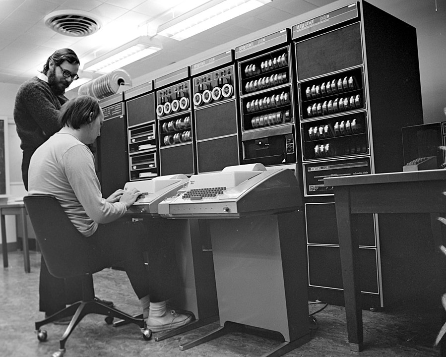

Язык Си
История
 Кен Томпсон и Деннис Ричи у PDP-11
Википедия про историю языка Си
Мы используем стандарт С17 (прошлые стандарты: C89, C99, C11; грядёт стандарт C23).
Черновик стандарта (сам стандарт можно купить у ISO за большие деньги, там написано то же самое.)
Что регулирует стандарт
- Implementation-defined behavior
- Пример: представление целых чисел (two's complement, sign-magnitude)
- Unspecified behavior
- Пример: порядок вычисления аргументов при вызове функции (
f(g(), h()))
- Пример: порядок вычисления аргументов при вызове функции (
- Undefined behavior (UB)
- Пример: выход за границы массива
Статья про то, зачем нам нужен UB
*p = 1;
if (!p) {
fprintf(stderr, “NULL pointer\n”);
return;
}
Целые типы
char signed char unsigned char
short = signed short unsigned short
int = signed int unsigned int
long = signed char unsigned char
long long = signed long long unsigned long long
- CHAR_BIT >= 8
- sizeof(char)== 1
- sizeof(signed T) == sizeof(unsigned T) == sizeof(T)
- short как минимум 16 бит
- int как минимум 16 бит
- long как минимум 32 бита
- long long как минимум 64 бита
sizeof для типов:
Тип Atmel AVR 32-bit Win64 64-bit
char 1 1 1 1
short 2 2 2 2
int 2 4 4 4
long 4 4 4 8
long long - 8 8 8
__int128 - - - 16
#include <limits.h>
CHAR_MIN, CHAR_MAX, SCHAR_MIN, SCHAR_MAX,
UCHAR_MIN, ..., INT_MIN, INT_MAX, UINT_MAX,
LONG_MIN, LONG_MAX, ULONG_MAX, LLONG_MIN,
LLONG_MAX, ULLONG_MAX
Заголовочный файл <stdint.h>:
- Знаковые типы:
int8_t, int16_t, int32_t, int64_t - Беззнаковые типы:
uint8_t, uint16_t, uint32_t, uint64_t - Типы размера, достаточного для хранения
адреса в памяти:
intptr_t, uintptr_t int8_min_t(минимум 8 бит, но может быть больше, если платформой не поддерживается вариант с 8 битами),int8_fast_t(минимум 8 бит, но больше, если вычисления так производить быстрее)
Литералы:
0 // int
0U // unsigned
0UL // unsigned long
0LL // long long
Знаковая и беззнаковая арифметика
Unsigned – арифметика по модулю \(2^N\).
Signed – операции с неправильным результатом, как правило, UB.
UINT_MAX + 1; // OK, always 0
INT_MAX + 1; // UB
int i;
i < i + 1; // the compiler may assume this is always true
Опции gcc:
-ftrapv– abort() при знаковом целочисленном переполнении-fwrapv– выполнять знаковые операции по модулю 2^N, но компилятор не делает никаких оптимизационных предположений-fsanitize=undefined– частичная проверка на undefined behavior при работе программы
Для обнаружения переполнения в знаковой арифметике можем воспользоваться GCC built-in overflow detection
Implicit conversions
Integer promotion: числа короче, чем int (то есть char, short) при использовании их в выражениях превратятся в int или unsigned int
cppreference on implicit conversions
Hello World
#include <stdio.h>
#define GREETING "Hello, world!\n"
// макрос будет раскрыт в ходе препроцессирования
int main(void) {
printf("Hello, world!\n");
return 0;
}
int main(){} //объявление функции с неизвестными параметрами
// запуск
gcc hello.c -o hello
./hello
gcc -c hello.c - делает объектный файл
gcc -S hello.c - делает ассемблерный файл
gcc -E hello.c - остановка на стадии препроцессирования
gcc -Wall -Werror // show all warnings, warnings will be treated as errors
Исполнение начинается с нахождения функции main: если она не нашлась - ошибка компоновки. Main - единственная функция, которая может ничего не возвращать, и это не приведет к UB. В таком случае будет считаться, что main возвращает 0
#include <stdio.h>
#define GREETING "Hello, world\n"
int foobar() {}
int main(void) {
printf(GREETING);
int x = foobar(); // UB
return 0;
}
Классы хранения переменных
#include <stdio.h>
#define GREETING "Hello, world\n"
int x; // статический класс хранения
int main(void) {
int y; // автоматический класс хранения
printf(GREETING);
return 0;
}
- Автоматический : переменная объявлена внутри функции (создается при своем объявлении, перестает существовать при завершении функции, то есть живет на стеке). Если не инициализировать, то остается не инициализированной - при использовании будет ub.
- Статический: существует все время, пока существует программа (попадает в секцию data/bss). Автоматически инициализируются 0 (по стандарту), если их не инициализировать.
- Регистровый - нет адреса в памяти
register int r;
Extern, static
Объявить переменную, определенную в другой единице трансляции
extern int x;
Ключевое слово static
Для статической переменной сообщает компилятору, что в других единицах трансляциях эту переменную нельзя увидеть (то есть переменная перестанет быть экспортируемой (так по умолчанию))
Для автоматической переменной ключевое слово static показывает, что она находится в статической памяти [у нее статический класс хранения]. У нее будет скрытый класс линковки (нельзя увидеть в другой единице трансляции)
static int x;
Запись заголовочных файлов: пользовательских и системных
//incr.h
int incr(void);
#include <stdio.h> // системный
#include "incr.h" // пользовательский
#define GREETING "Hello, world\n"
int main(void) {
printf(printf("x is %d\n", incr()));
return 0;
}
Declarations and definitions
Объявления функций сколько угодно раз, определение только 1.
Заголовочный файл может быть включен в код несколько раз, но может все сломать. Чтобы избежать, используем макрос:
//foo.h
#ifndef FOO_H
#define FOO_H
struct foo {
int x;
};
#endif
Почти для всех компиляторов вместо этого можно писать #pragma once
Структуры
Без ключевого слова struct pair не является именем типа. Автоматической инициализации нет, но есть агрегатная.
#include <stdio.h>
#include "incr.h"
struct pair { //
char b;
int i;
long long l;
};
int main(void) {
struct pair p1 = {1, 2, 3}; // инициализация 1
struct pair p = {.b = 1, .l = 2}; // инициализация 2
// кого явно не инициализировали - тот 0
printf("x is %d\n", p.i);
}
Выравнивание типов
В си происходит автоматически. Обычно выравнивание равно размеру типа, но не
больше размера машинного слова (int) на данной платформе. Например, на 32-битной
платформе выравнивание long long будет 32 бита.
Чтобы элементы структуры выровнялись, компилятор вставляет между ними padding - пустые байты. У структуры в целом выравнивание максимальное из всех ее членов.
#include <stdio.h>
#include "incr.h"
struct pair { // 32 bit platform
char b; // 3 empty bytes
int i; // 0 empty bytes
long long l;
};
Как попросить компилятор не добавлять паддинг
#include <stdio.h>
#include "incr.h"
struct pair { // 32 bit platform
char b; // 3 empty bytes
int i; // 0 empty bytes
long long l;
} __attribute__((packed));
Массивы
// пустой инициализатор невалиден
int arr[10] = {0} // остальные инициализируются автоматически
// можно инициализировать произвольный элемент массива
int arr[10] = {[5] = 4};
// кол-во элементов = кол-во инициалированных
int arr[] = {1,2,3}
Выход за границы массива - ub. Узнать размеры массива можно через макрос.
#define ARRLEN(a) (sizeof(a) / sizeof((a)[0]))
int main() {
int arr[10] = {[5] = 4};
for (int i = 0; i < ARRLEN(arr); ++i) {
printf("%d\n", arr[i]);
}
}
Указатели
&p; // взять адрес переменной
int* p = &arr[0]; // указатель
-
Разыменование указателя
*p; -
Арифметика
Прибавить целое число - отступить столько эл-ов в массиве (к адресу указателя прибавляется это число * sizeof(type))
int *ptr = &arr[0]; for (int i = 0; i < ARRLEN(arr); ++i) { printf("%d\n", *(ptr + i)); }равнозначно
int *ptr = &arr[0]; for (int i = 0; i < ARRLEN(arr); ++i) { printf("%d\n", ptr[i]); }
Строки
0-терминированная строка - массив байт, заканчивающийся на \0
char[] c = "hello world\n"; // лежит на стеке
c[0]="H"; //можно менять, но длину строки менять нельзя
//такую строку не получится поменять, она лежит в rodata
char* str = "hello world\n";
Длина строки char* str = "hello world\n":
int strlen(char* s){
int i;
for (i = 0; s[i] != '\0'; ++i);
return i;
}
int main(void){
char* str = "hello world\n";
printf("%d %s", strlen(str), str);
}
Printf
int printf(const char *restrict format, ...);
Как работает printf:
- Принимает строчку с форматом
- Читает строку, печатает обычные символы, пока не дойдет до символа %
- Смотрит спецификатор формата
"%d" - int
"%s" - char*
"%x" - int в 16ричной системе счисления, "%o" - в 8ричной
Спецификатор размера
h - short
l - long int
short s = 7;
printf("%d %hd", strlen(str), s); // integer promotion of s
Scanf
int scanf(const char *restrict format, ...);
- Тут очень важен спецификатор размера числа
- Возвращает кол-во считанных элементов; если scanf ничего не считал, возвращает eof
Ввод числа
int main(void) {
short shint = 7;
int result = scanf("%hd", &shint);
if (result == EOF) {
printf("empty input\n");
return 1;
}
if (result != 1) {
printf("error\n");
return 1;
}
}
Ввод строки - читает до 1 пробела
int main(void) {
char buf[100];
int result = scanf("%s", buf);
if (result != 1) {
printf("error\n");
return 1;
}
printf("buf : %s\n", buf);
}
Чтобы не начать запись за границами буфера:
int main(void) {
char buf[3] = {0};
int result = scanf("%2s", buf);
if (result != 1) {
printf("error\n");
return 1;
}
printf("buf : %s\n", buf);
}
Символы вне кодровки ASCII - Unicode
В ASCII 127 символов, помещаются в 1 байт. Unicode - кодировка, где каждый символ имеет номер code point.
# python
ord('f') # 102
chr(1100) # ь
В качестве кодировки code points используется теперь в основном utf-8. Она запихивает все символы в байтовую строку. Символы ascii записываются теми же кодами. Вне ascii — распилим число на отдельные участки бит, старшими битами будем кодировать их последовательность
𝄞 ← U+1D11E MUSICAL SYMBOL G CLEF
0x1d11e = 0b11101_000100_011110
UTF-8: 0b11110_000 0b10_011101 0b10_000100 0b10_011110
In [1]: [bin(b) for b in 'q'.encode('utf-8')]
Out[1]: ['0b01110001']
In [2]: [bin(b) for b in 'я'.encode('utf-8')]
Out[2]: ['0b11010001', '0b10001111']
In [3]: [bin(b) for b in 'ツ'.encode('utf-8')]
Out[3]: ['0b11100011', '0b10000011', '0b10000100']
In [4]: [bin(b) for b in '𝄞'.encode('utf-8')]
Out[4]: ['0b11110000', '0b10011101', '0b10000100', '0b10011110']
Overlong encoding — использование большего числа байт, чем необходимо:
0b110_00000 0b10_100001 → символ chr(0b100001) == '!'.
Структура программы
Declarations and definitions
Translation unit
Extern, static
Агрегатные типы
Arrays and structures
Aggregate initializers
Array dimensions
Pointer arithmetic
Typedef
Alignment
Другие темы
Hosted vs freestanding
Stdio
Argc/argv
Strings
Restrict
Noreturn etc
VLA
Function pointers